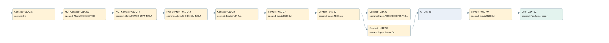

start gas test
burner control · 검색 색인 순서 4 · 원본 내부 NID 추정 4
백업 PLF 원본의 2680876 바이트 위치에서 복원한 XML. 검색 문서 1857의 객체 키 16102200d310000000000000와 연결했다. 이름 해석 11/11개. 남은 RefId는 상수 또는 미해석 참조다.
연결 구조 다시 그리기
원본 Part/PCon/Wire를 이용한 연결도다. TIA 화면의 래더 배치 또는 실행 결과를 재현한 그림은 아니다. 핀 연결은 아래 표와 원본 XML을 기준으로 읽는다. 노드 위에 마우스를 두면 피연산자 이름을 볼 수 있다.

접점·코일·블록과 피연산자
| Part UID | Gate | Negated 핀 | 연결 피연산자 |
|---|---|---|---|
| 207 | Contact | operand = ON | |
| 209 | Contact | operand | operand = Allarm.MAX_MAX_TC09 |
| 211 | Contact | operand | operand = Allarm.BURNER_START_FAULT |
| 213 | Contact | operand | operand = Allarm.BURNER_LDU_FAULT |
| 23 | Contact | operand = Inputs.FN01 Run | |
| 27 | Contact | operand = Inputs.FN04 Run | |
| 32 | Contact | operand = Inputs.RD01 run | |
| 36 | Contact | operand = Inputs.FEEDBACKMOTOR FN-06 | |
| 228 | Contact | operand = Inputs.Burner On | |
| 38 | O | ||
| 40 | Contact | operand = Inputs.FN02 Run | |
| 182 | Coil | operand = Flag.Burner_ready |
접점 경로를 펼친 조건식
Contact·O/A·비교기의 원본 연결을 읽기 쉽게 펼친 보조 해석이다. POWER는 전원 레일 시작을 뜻한다. 호출 블록·에지·타이머의 내부 동작과 다중 쓰기 순서는 이 표로 실행 검증하지 않았다. 미해석 핀과 RefId는 원문 연결표에서 확인한다.
| UID | 동작 | 대상 | 원본 접점 경로 | 내용 |
|---|---|---|---|---|
| 182 | Coil | Flag.Burner_ready | (((((((((ON AND NOT [Allarm.MAX_MAX_TC09]) AND NOT [Allarm.BURNER_START_FAULT]) AND NOT [Allarm.BURNER_LDU_FAULT]) AND Inputs.FN01 Run) AND Inputs.FN04 Run) AND Inputs.RD01 run) AND Inputs.FEEDBACKMOTOR FN-06) OR (((((((ON AND NOT [Allarm.MAX_MAX_TC09]) AND NOT [Allarm.BURNER_START_FAULT]) AND NOT [Allarm.BURNER_LDU_FAULT]) AND Inputs.FN01 Run) AND Inputs.FN04 Run) AND Inputs.RD01 run) AND Inputs.Burner On)) AND Inputs.FN02 Run) | 조건에 따른 Coil 기록 |
원본 배선 연결
| Wire UID | 동일 Wire 연결 끝점 |
|---|---|
| 227 | Powerrail {} ↔ Part 207.in |
| 194 | ORef 183 (ON) ↔ Part 207.operand |
| 208 | Part 207.out ↔ Part 209.in |
| 195 | ORef 184 (Allarm.MAX_MAX_TC09) ↔ Part 209.operand |
| 210 | Part 209.out ↔ Part 211.in |
| 196 | ORef 185 (Allarm.BURNER_START_FAULT) ↔ Part 211.operand |
| 212 | Part 211.out ↔ Part 213.in |
| 197 | ORef 186 (Allarm.BURNER_LDU_FAULT) ↔ Part 213.operand |
| 54 | Part 213.out ↔ Part 23.in |
| 22 | ORef 24 (Inputs.FN01 Run) ↔ Part 23.operand |
| 25 | Part 23.out ↔ Part 27.in |
| 26 | ORef 29 (Inputs.FN04 Run) ↔ Part 27.operand |
| 30 | Part 27.out ↔ Part 32.in |
| 31 | ORef 33 (Inputs.RD01 run) ↔ Part 32.operand |
| 34 | Part 32.out ↔ Part 36.in ↔ Part 228.in |
| 35 | ORef 37 (Inputs.FEEDBACKMOTOR FN-06) ↔ Part 36.operand |
| 53 | Part 36.out ↔ Part 38.in1 |
| 231 | ORef 229 (Inputs.Burner On) ↔ Part 228.operand |
| 45 | Part 228.out ↔ Part 38.in2 |
| 46 | Part 38.out ↔ Part 40.in |
| 39 | ORef 41 (Inputs.FN02 Run) ↔ Part 40.operand |
| 55 | Part 40.out ↔ Part 182.in |
| 206 | ORef 193 (Flag.Burner_ready) ↔ Part 182.operand |
식별자 해석 근거 11개
| ORef UID | RefId | 이름 | IdentXmlPart 파일 | 해석 방법 |
|---|---|---|---|---|
| 183 | 1 | ON | 0582-IdentXmlPart.xml | UID/RID + search-text + NID agreement |
| 184 | 24 | Allarm.MAX_MAX_TC09 | 0585-IdentXmlPart.xml | UID/RID + search-text + NID agreement |
| 185 | 27 | Allarm.BURNER_START_FAULT | 0585-IdentXmlPart.xml | UID/RID + search-text + NID agreement |
| 186 | 6 | Allarm.BURNER_LDU_FAULT | 0585-IdentXmlPart.xml | UID/RID + search-text + NID agreement |
| 24 | 218 | Inputs.FN01 Run | 0585-IdentXmlPart.xml | UID/RID + search-text + NID agreement |
| 29 | 235 | Inputs.FN04 Run | 0585-IdentXmlPart.xml | UID/RID + search-text + NID agreement |
| 33 | 220 | Inputs.RD01 run | 0585-IdentXmlPart.xml | UID/RID + search-text + NID agreement |
| 37 | 221 | Inputs.FEEDBACKMOTOR FN-06 | 0585-IdentXmlPart.xml | UID/RID + search-text + NID agreement |
| 229 | 227 | Inputs.Burner On | 0585-IdentXmlPart.xml | UID/RID + search-text + NID agreement |
| 41 | 222 | Inputs.FN02 Run | 0585-IdentXmlPart.xml | UID/RID + search-text + NID agreement |
| 193 | 34 | Flag.Burner_ready | 0585-IdentXmlPart.xml | UID/RID + search-text + NID agreement |
검색 코드 보조 자료
참조 명칭을 찾기 위한 자료이며 실행 순서나 AND/OR 관계는 위 연결표로 확인한다.
"on" "allarm".max_max_tc09 "allarm".burner_start_fault "allarm".burner_ldu_fault "inputs"."fn01 run" "inputs"."fn04 run" "inputs"."rd01 run" "inputs"."feedbackmotor fn-06" "inputs"."fn02 run" "flag".burner_ready "inputs"."burner on"